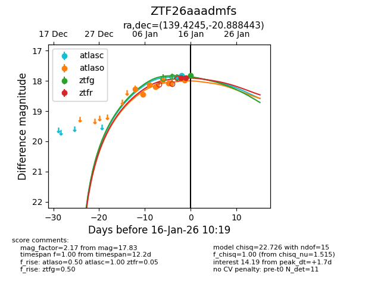
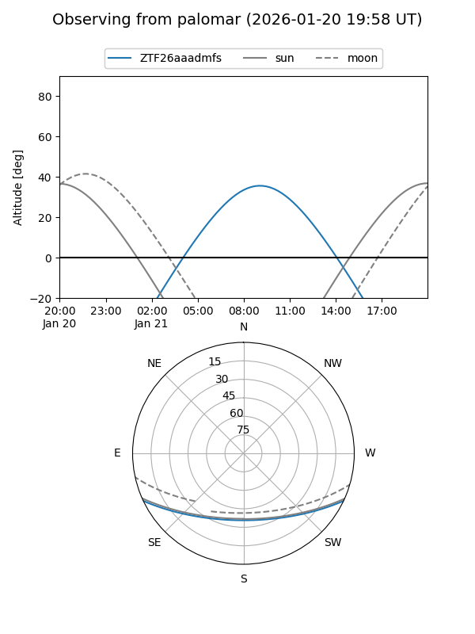
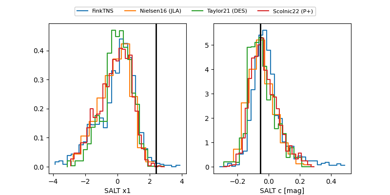

ZTF26aaadmfs
Target ZTF26aaadmfs at 2026-01-22 10:21
Aliases and brokers:
FINK: link
Lasair: link
ALeRCE: link
alt names
ZTF26aaadmfs (ztf,fink_ztf)
Coordinates:
equatorial (ra, dec) = 139.4245,-20.88844
equatorial (HMS+DMS) = 09:17:41.88,-20:53:18.40
galactic (l, b) = (250.2063,+19.43694)
Flags:
Photometry:
last atlasc=17.89, atlaso=18.05, ztfg=18.03, ztfr=18.03
4 atlasc, 11 atlaso, 4 ztfg, 7 ztfr detections
Lightcurve

Visibility


Additional plots
